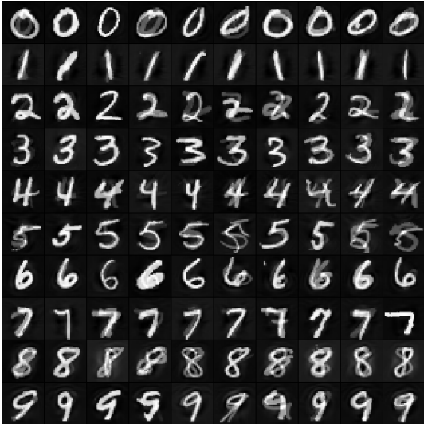
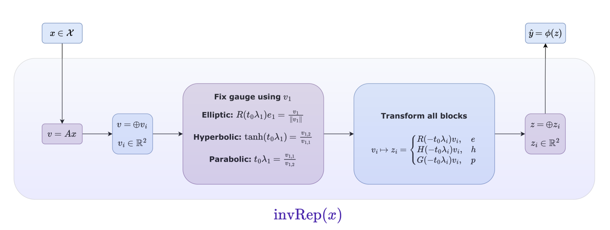
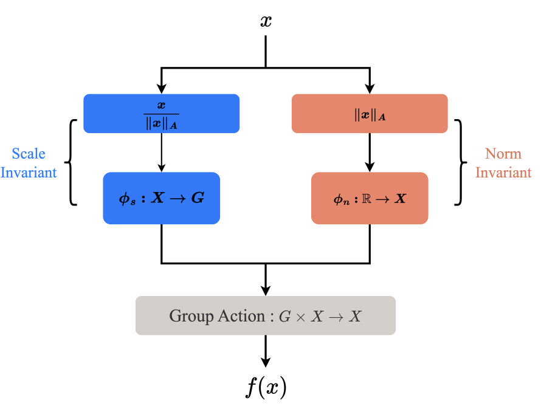

Publications

Constructing Bayesian Pseudo-Coresets using Contrastive Divergence Accepted in UAI 2024 · arXiv ↗
Interpretable Discovery of One-parameter Subgroups Accepted in ICML 2026 · arXiv ↗
Learning Equivariant Functions via Quadratic Forms Accepted in AISTATS 2025 · arXiv ↗